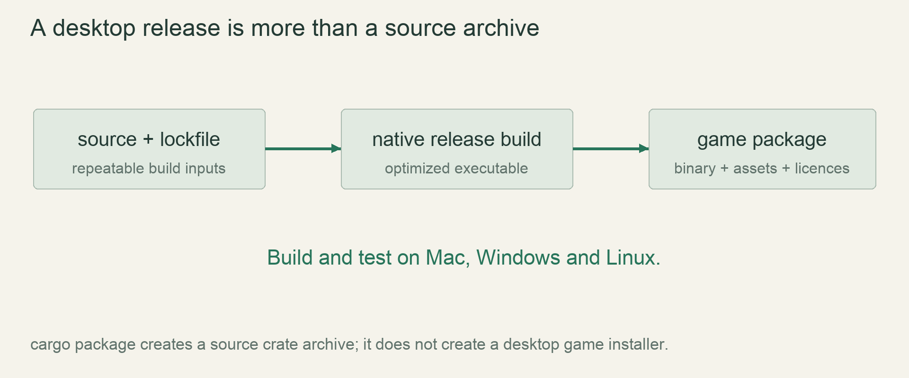

M7 / ReleaseLesson 96 of 100 · ~5 min reading + build time
Keep releases compatible and saves recoverable
Load a supported old world with its original generator and reject unsupported versions without modifying the save.
Previously: Handle failures as normal outcomes. Keep that working result available before starting this lesson.
Why we need this now
Being able to decode yesterday’s bytes does not guarantee that tomorrow’s unexplored terrain matches them. Format compatibility and world-generation compatibility are separate promises.
Your result: Load a supported old world with its original generator and reject unsupported versions without modifying the save.

01Two version numbers answer different questions
The format version says how to decode a snapshot’s bytes and metadata. The generator version says which deterministic rules create chunks that were not saved because they were unchanged. If you update the generator but continue decoding the same format, old saved hills can meet newly generated incompatible hills at a seam.
Store both values in the world index and include them in fixtures. Keep released generator implementations available under stable identifiers or provide an explicit migration policy. Before the first release, breaking a draft world can be acceptable, but the game must report incompatibility instead of pretending every version is supported.
02Dispatch supported versions explicitly
A small match over known generator versions makes supported behavior visible. The worked example uses two deliberately simple height functions so you can see that generator1 remains callable after generator2 exists. The real functions contain the released biome/feature rules and their selected dependencies.
Returning a function pointer is one simple implementation; a versioned enum with methods is another. The important contract is that loading generator1 does not quietly call generator2. If a historical dependency algorithm changes, a retained wrapper around the latest crate may not preserve historical results; retain the actual configuration and behavior with regression samples.
03Migrations must be reversible operations
A migration reads and validates the old world into separate state, transforms it, writes a new generation, and verifies it before committing a new pointer. Preserve the original files until the replacement is proven. Never rewrite the only copy in place and hope a later chunk decode succeeds.
Some migrations change representation without changing world meaning, such as a field encoding expansion. Others alter game rules or terrain expectations. State which type you are performing and what equality the verification can claim. A changed simulation model may require a compatibility mode rather than a false promise of identical future behavior.
04Keep fixtures and recovery instructions together
Commit tiny old-version worlds as test fixtures once their format is released. Tests should cover decode, re-save, expansion into an unsaved neighboring chunk and recovery from an interrupted write. Include a corrupt-new-save/valid-old-save pair to prove backup selection still follows complete-generation validation.
Write a recovery note that tells a player to copy the world folder before manual repair, how the game selects a backup and how unsupported-version messages differ from corruption. Do not ask them to delete unknown files until a diagnostic establishes what happened.
Read → predict → run → change
Walk through the working example
Complete version-dispatch experiment: examples/lesson_096.rs; run cargo run --example lesson_096.
Download this worked example ↧
type HeightFn=fn(i32)->i32;
fn height_v1(x:i32)->i32 { 20+x.rem_euclid(4) }
fn height_v2(x:i32)->i32 { 30+x.rem_euclid(7) }
fn generator(version:u16)->Result<HeightFn,String> {
match version {
1=>Ok(height_v1),
2=>Ok(height_v2),
_=>Err(format!("unsupported generator version {version}")),
}
}
fn validate_format(version:u16)->Result<(),String> {
if version==1 { Ok(()) }
else { Err(format!("unsupported save format {version}")) }
}
fn main() {
validate_format(1).unwrap();
let old=generator(1).unwrap();
let latest=generator(2).unwrap();
assert_eq!(old(5),21);
assert_eq!(latest(5),35);
assert!(generator(99).is_err());
println!("format 1 remains readable; generator 1 still returns 21");
}Read what each part does
- Function dispatch is based on stored generator identity, not whichever implementation was most recently written.
- Format validation happens independently; the same format can describe worlds using different retained generators.
- The example has no file writes, demonstrating that rejecting an unknown version does not require modifying input.
Expected result
format 1 remains readable; generator 1 still returns 21Exact version numbers, paths and compiler wording may differ. Compare the behavior and file locations, not incidental output formatting.
Prediction · repair · transfer
Exercises you actually do
Write a prediction or make an attempt before opening a solution. Use the hint if stuck; then compare reasoning and verify with the stated check. A different implementation is fine when it satisfies the same contract.
Preserve an old border
Sample coordinates63 and64 with generator1 before and after adding generator2.
Need a hint?
The old world must explicitly select generator1.
Worked solution
Both samples retain their generator1 results. Mixing generator1 at63 with generator2 at64 demonstrates the seam hazard even though the file format did not change.
How to verify your result
An old-version regression array remains byte-for-byte equal.
Reject without rewriting
Feed generator99 to a load fixture and watch filesystem operations.
Need a hint?
Validation precedes a new save generation.
Worked solution
Return an unsupported-version error before committing or rewriting anything. Hash the input files before/after and assert equality.
How to verify your result
Unknown input stays intact and recoverable.
Interrupt a migration
Simulate a write failure after one new region is written.
Need a hint?
The old manifest must still identify a complete world.
Worked solution
Keep the original manifest/files. Incomplete new-generation files are ignored or cleaned under the agreed recovery policy. Loading chooses the intact old generation.
How to verify your result
No mixed migrated/unmigrated snapshot is selected.
When it goes wrong
Start with the observed symptom. Change one assumption at a time instead of pasting fixes until the error disappears.
New terrain seams appear in old saves
What is happening: Only the file format was versioned.
Try this: Dispatch the stored generator version for absent chunks too.
A migrated save is unrecoverable
What is happening: The only original was rewritten in place.
Try this: Write a separate generation and preserve the input until verification.
Old generator changes after dependency update
What is happening: The wrapper relies on evolving upstream behavior.
Try this: Pin and test historical generation behavior with known coordinate fixtures.
Explain it without the example
Why must a migration preserve the input save until the replacement is verified?
Reasoning to compare
A failed transformation can otherwise destroy the only recoverable world. Keeping the original makes failure reversible.
Self-check only: test a prediction or ask your tutor if anything still feels arbitrary.
Finish with evidence
An old supported world loads and expands without seams. An unsupported one is rejected without modifying its files.
Make one small variation without copying: predict it, run it and explain any difference. On another day, repeat one exercise from memory before starting the next lesson. Ask your tutor about any step you can execute but cannot explain.
This is an attempt marker, not a grade. Learning records are written only after demonstrated understanding.
Primary sources for this lesson
Use sources to verify the mechanism. The lesson itself supplies the instructions; the links are not a substitute for teaching them.